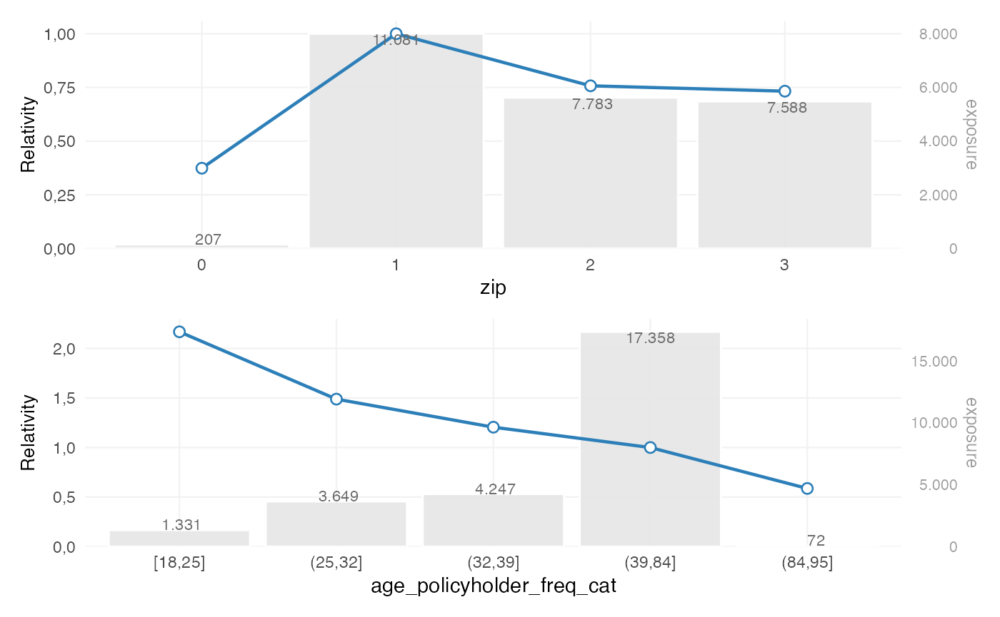
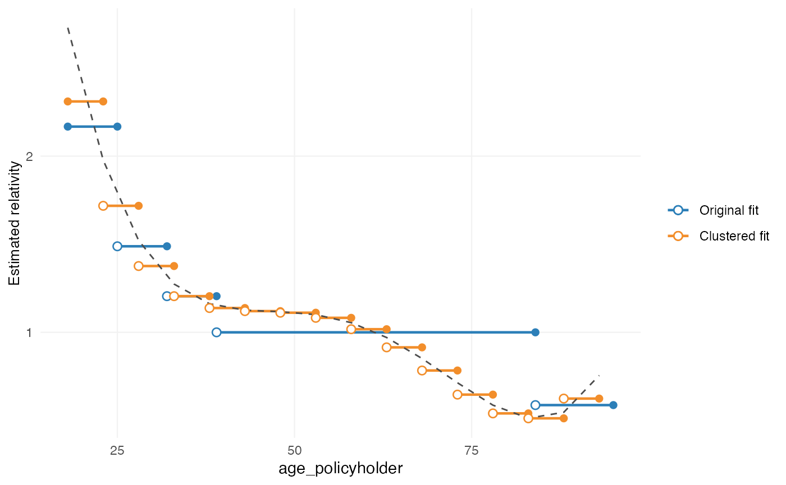
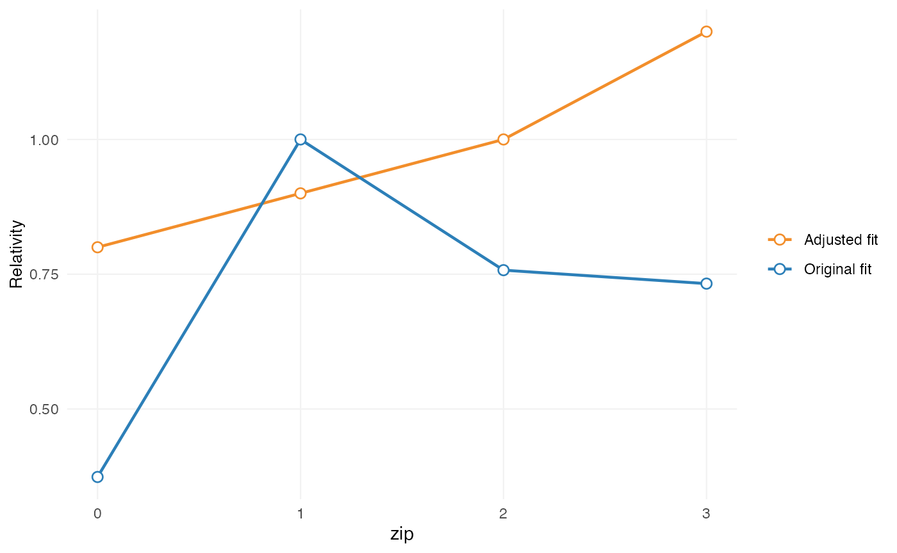
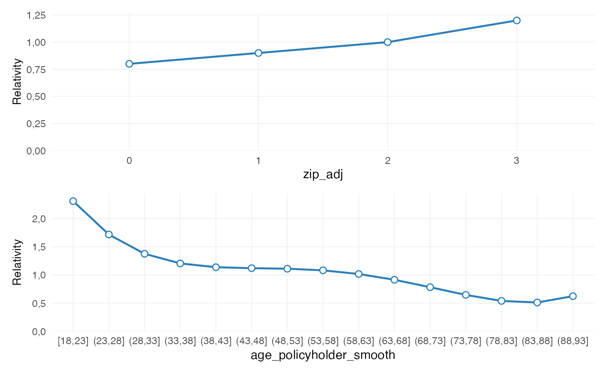
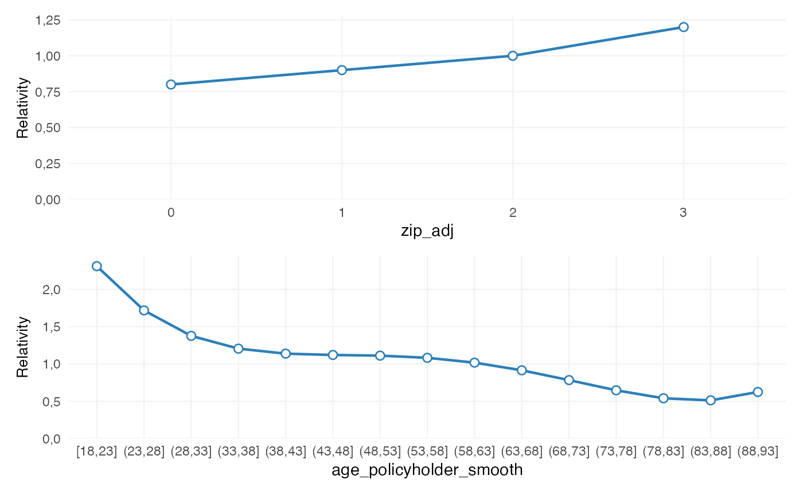

Introduction
In insurance pricing, model estimation is usually not the final step.
A fitted GLM may capture the structure of the portfolio well, but the raw coefficients are not always directly suitable for implementation in a tariff.
Common reasons include:
- irregular local variation
- lack of monotonicity
- externally imposed tariff structures
- expert judgement not directly represented in the model
- implementation constraints in policy administration systems
For this reason, pricing workflows typically distinguish between:
- model estimation
- tariff refinement
- final refit of the pricing structure
insurancerating formalises this through a staged
refinement workflow:
- fit an unrestricted model
- initialise a refinement object with
prepare_refinement() - add one or more refinement steps
- inspect these steps before refit
- call
refit()to obtain the final fitted model
This separation makes the workflow easier to understand, reproduce, and audit.
When refinement is used
Refinement is used when the estimated model output is statistically acceptable, but not yet suitable as a tariff structure.
Typical use cases include:
- smoothing a rating factor derived from a continuous variable
- imposing monotonicity
- restricting coefficients to a predefined relativity structure
- introducing expert-based relativities within existing model levels
- simplifying the final tariff for practical implementation
In most cases, refinement is applied to the premium model, rather than to the separate frequency or severity models. The purpose of refinement is not primarily to smooth intermediate model components, but to impose structure on the final pricing signal that will be used in the tariff.
Example setup
The workflow below starts from a standard premium modelling setup:
- analyse a continuous variable with a GAM
- convert it to tariff classes
- fit frequency and severity models
- combine both into a premium proxy
- fit an unrestricted premium model
library(insurancerating)
library(dplyr)
age_policyholder_frequency <- riskfactor_gam(
data = MTPL,
nclaims = "nclaims",
x = "age_policyholder",
exposure = "exposure"
)
clusters_freq <- construct_tariff_classes(age_policyholder_frequency)
dat <- MTPL |>
mutate(age_policyholder_freq_cat = clusters_freq$tariff_classes) |>
mutate(across(where(is.character), as.factor)) |>
mutate(across(where(is.factor), ~ biggest_reference(., exposure)))
freq <- glm(
nclaims ~ bm + age_policyholder_freq_cat,
offset = log(exposure),
family = poisson(),
data = dat
)
sev <- glm(
amount ~ zip,
weights = nclaims,
family = Gamma(link = "log"),
data = dat |> filter(amount > 0)
)
premium_df <- dat |>
add_prediction(freq, sev) |>
mutate(premium = pred_nclaims_freq * pred_amount_sev)
burn_unrestricted <- glm(
premium ~ zip + bm + age_policyholder_freq_cat,
weights = exposure,
family = Gamma(link = "log"),
data = premium_df
)Before refinement, inspect the unrestricted coefficient structure:
rating_table(burn_unrestricted)
#> risk_factor level est_burn_unrestricted
#> 1 (Intercept) (Intercept) 1.073720e+04
#> 2 zip 1 1.000000e+00
#> 3 zip 0 3.739250e-01
#> 4 zip 2 7.575359e-01
#> 5 zip 3 7.325754e-01
#> 6 age_policyholder_freq_cat (39,84] 1.000000e+00
#> 7 age_policyholder_freq_cat [18,25] 2.167946e+00
#> 8 age_policyholder_freq_cat (25,32] 1.488489e+00
#> 9 age_policyholder_freq_cat (32,39] 1.205259e+00
#> 10 age_policyholder_freq_cat (84,95] 5.868964e-01
#> 11 bm bm 9.980489e-01
rating_table(burn_unrestricted,
model_data = premium_df,
exposure = "exposure") |>
autoplot()
At this stage, the coefficients reflect the unrestricted model fit. In practice, this output may already be informative, but still too irregular or too detailed for direct tariff use.
The refinement object
Refinement begins with:
ref <- prepare_refinement(burn_unrestricted)
ref
#> <rating_refinement>
#> Base model: glm, lm
#> Steps: 0A rating_refinement object stores:
- the fitted base model
- the underlying model data
- the refinement steps added to the workflow
At this point, the model itself has not been refitted. The refinement object represents a proposed tariff adjustment structure, not yet the final fitted result.
This distinction is deliberate: refinement steps can be inspected before they are incorporated into the final model.
Smoothing
Purpose
Smoothing is used when a rating factor derived from a continuous variable contains undesirable local variation.
For example, a coefficient pattern such as:
- age 30–34 lower
- age 34–38 higher
- age 38–42 lower again
may be statistically possible, but undesirable in a tariff. Smoothing imposes a more stable structure on the rating factor.
Adding smoothing
ref <- ref |>
add_smoothing(
x_cut = "age_policyholder_freq_cat",
x_org = "age_policyholder",
breaks = seq(18, 95, 5),
weights = "exposure"
)The key arguments are:
-
x_cut: the binned factor present in the GLM -
x_org: the original continuous variable -
breaks: the preferred commercial cut points -
smoothing: the smoothing specification -
weights: optional weighting, typically exposure
Inspecting smoothing before refit
print(ref)
#> <rating_refinement>
#> Base model: glm, lm
#> Steps: 1
#> 1. smoothing [age_policyholder_freq_cat]
autoplot(ref, variable = "age_policyholder_freq_cat")
This plot belongs to the pre-refit workflow. It shows:
- the original fitted coefficients
- the proposed smoothed structure
The purpose is to inspect the refinement step itself, before it is incorporated into the final fitted model.
Choosing a smoothing method
Typical smoothing choices are:
-
"spline": polynomial-style smoothing -
"gam": flexible smooth curve -
"mpi": monotone increasing -
"mpd": monotone decreasing
The appropriate choice depends on the pricing context.
For example:
- age may justify a flexible smooth
- insured value or power may require a monotonic relationship
- low-exposure tails may benefit from exposure weighting
Restrictions
Purpose
Restrictions are used when coefficients must follow a predefined structure.
Typical examples include:
- bonus-malus systems
- governance-approved relativities
- externally mandated tariff structures
- implementation constraints in policy systems
Restrictions differ from smoothing:
- smoothing reshapes the fitted pattern
- restriction imposes user-defined coefficients
Adding restrictions
zip_df <- data.frame(
zip = c(0, 1, 2, 3),
zip_adj = c(0.8, 0.9, 1.0, 1.2)
)
ref <- ref |>
add_restriction(restrictions = zip_df)The restriction table must contain exactly two columns:
- the original factor levels
- the adjusted coefficients
Inspecting restrictions before refit
autoplot(ref, variable = "zip")
This shows the proposed restricted structure relative to the original fitted model.
Expert-based relativities
Purpose
In some cases, the fitted model uses a broad factor level, while business or portfolio knowledge suggests that more granular differentiation is required.
For example, a model may estimate one coefficient for “construction”, while pricing practice distinguishes between:
- residential construction
- commercial construction
- civil engineering
This is particularly relevant when subgroup exposure is too limited to estimate stable coefficients directly.
Adding relativities
relativities_activity <- relativities_list(
split_level(
"construction",
c("residential_construction", "commercial_construction"),
c(1.00, 1.15)
)
)
ref <- ref |>
add_relativities(
risk_factor = "business_activity",
risk_factor_split = "business_activity_split",
relativities = relativities_activity,
exposure = "exposure",
normalize = TRUE
)If normalize = TRUE, the relativities are scaled so that
their exposure-weighted average remains equal to 1 within the original
level.
This preserves the original model signal while introducing finer structure.
Refit
Why refit is required
Refinement steps alter part of the model structure. Once these changes are applied, the remaining coefficients may also need to adjust.
For that reason, the workflow does not end with
add_smoothing() or add_restriction(). The
final step is:
burn_refined <- refit(ref)This refits the model while incorporating the refinement steps.
Inspecting the final fitted result
After refit, use rating_table():
rating_table(burn_refined)
#> risk_factor level est_burn_refined
#> 1 (Intercept) (Intercept) 9376.5777003
#> 2 zip_adj 0 0.8000000
#> 3 zip_adj 1 0.9000000
#> 4 zip_adj 2 1.0000000
#> 5 zip_adj 3 1.2000000
#> 6 age_policyholder_smooth [18,23] 2.3107319
#> 7 age_policyholder_smooth (23,28] 1.7183044
#> 8 age_policyholder_smooth (28,33] 1.3763971
#> 9 age_policyholder_smooth (33,38] 1.2052590
#> 10 age_policyholder_smooth (38,43] 1.1379656
#> 11 age_policyholder_smooth (43,48] 1.1204187
#> 12 age_policyholder_smooth (48,53] 1.1113464
#> 13 age_policyholder_smooth (53,58] 1.0823030
#> 14 age_policyholder_smooth (58,63] 1.0176692
#> 15 age_policyholder_smooth (63,68] 0.9146517
#> 16 age_policyholder_smooth (68,73] 0.7832839
#> 17 age_policyholder_smooth (73,78] 0.6464252
#> 18 age_policyholder_smooth (78,83] 0.5397614
#> 19 age_policyholder_smooth (83,88] 0.5118045
#> 20 age_policyholder_smooth (88,93] 0.6238929
#> 21 bm bm 0.9976439At this point, the output no longer represents proposed manual adjustments. It represents the final fitted coefficient structure.
The distinction is:
-
before refit()–> inspect the refinement plan -
after refit()–> inspect the fitted tariff structure
If smoothing, restrictions, and relativities have been applied, they are now embedded in the fitted model output.
Visualising the final structure
rating_table(
burn_refined,
model_data = premium_df,
exposure = "exposure"
) |>
autoplot()
#> zip_adj, age_policyholder_smooth not in model_data
Model data and rating grids
After refit, model structure can be extracted with
model_data():
md <- model_data(burn_refined)
head(md)
#> age_policyholder age_policyholder_freq_cat_smooth age_policyholder_smooth
#> 1 18 2.310732 [18,23]
#> 2 18 2.310732 [18,23]
#> 3 18 2.310732 [18,23]
#> 4 18 2.310732 [18,23]
#> 5 19 2.310732 [18,23]
#> 6 19 2.310732 [18,23]
#> nclaims exposure amount power bm zip age_policyholder_freq_cat
#> 1 1 1.00000000 261777 40 3 3 [18,25]
#> 2 0 0.09589041 0 68 5 2 [18,25]
#> 3 0 0.18630137 0 37 3 2 [18,25]
#> 4 0 0.18904110 0 33 1 2 [18,25]
#> 5 0 1.00000000 0 47 6 3 [18,25]
#> 6 1 0.06849315 6642 68 1 3 [18,25]
#> pred_nclaims_freq pred_amount_sev premium zip_adj
#> 1 0.26210740 68671.20 17999.229 1.2
#> 2 0.02502715 70854.51 1773.286 1.0
#> 3 0.04883097 70854.51 3459.894 1.0
#> 4 0.04975980 70854.51 3525.706 1.0
#> 5 0.26044415 68671.20 17885.011 1.2
#> 6 0.01802891 68671.20 1238.067 1.2Observed model-point combinations can be obtained with
rating_grid():
grid <- rating_grid(burn_refined)
head(grid)
#> zip age_policyholder_smooth bm exposure count zip_adj
#> 1 1 (23,28] 1 342.57808 414 1.2
#> 2 1 (23,28] 2 145.25753 173 1.2
#> 3 1 (23,28] 3 46.53699 53 1.2
#> 4 1 (23,28] 4 22.31507 26 1.2
#> 5 1 (23,28] 5 46.78630 54 1.2
#> 6 1 (23,28] 6 65.13699 71 1.2
#> age_policyholder_freq_cat_smooth
#> 1 2.310732
#> 2 2.310732
#> 3 2.310732
#> 4 2.310732
#> 5 2.310732
#> 6 2.310732This is typically used for:
- tariff review
- portfolio summaries
- compact prediction input
- implementation support
Complete example
A full refinement workflow typically looks as follows:
zip_df <- data.frame(
zip = c(0, 1, 2, 3),
zip_adj = c(0.8, 0.9, 1.0, 1.2)
)
burn_refined <- prepare_refinement(burn_unrestricted) |>
add_smoothing(
x_cut = "age_policyholder_freq_cat",
x_org = "age_policyholder",
breaks = seq(18, 95, 5),
weights = "exposure"
) |>
add_restriction(zip_df) |>
refit()
rating_table(burn_refined)
#> risk_factor level est_burn_refined
#> 1 (Intercept) (Intercept) 9376.5777003
#> 2 zip_adj 0 0.8000000
#> 3 zip_adj 1 0.9000000
#> 4 zip_adj 2 1.0000000
#> 5 zip_adj 3 1.2000000
#> 6 age_policyholder_smooth [18,23] 2.3107319
#> 7 age_policyholder_smooth (23,28] 1.7183044
#> 8 age_policyholder_smooth (28,33] 1.3763971
#> 9 age_policyholder_smooth (33,38] 1.2052590
#> 10 age_policyholder_smooth (38,43] 1.1379656
#> 11 age_policyholder_smooth (43,48] 1.1204187
#> 12 age_policyholder_smooth (48,53] 1.1113464
#> 13 age_policyholder_smooth (53,58] 1.0823030
#> 14 age_policyholder_smooth (58,63] 1.0176692
#> 15 age_policyholder_smooth (63,68] 0.9146517
#> 16 age_policyholder_smooth (68,73] 0.7832839
#> 17 age_policyholder_smooth (73,78] 0.6464252
#> 18 age_policyholder_smooth (78,83] 0.5397614
#> 19 age_policyholder_smooth (83,88] 0.5118045
#> 20 age_policyholder_smooth (88,93] 0.6238929
#> 21 bm bm 0.9976439
rating_table(
burn_refined,
model_data = premium_df,
exposure = "exposure"
) |>
autoplot()
#> zip_adj, age_policyholder_smooth not in model_data
Legacy workflow
Legacy entry points remain available:
burn_refined_old <- burn_unrestricted |>
smooth_coef(
x_cut = "age_policyholder_freq_man",
x_org = "age_policyholder",
breaks = seq(18, 95, 5)
) |>
restrict_coef(zip_df) |>
refit_glm()These are primarily maintained for backward compatibility.
For new code, the standard workflow is:
This makes the sequence of tariff adjustments explicit and improves interpretability, governance, and auditability.
Summary
The refinement workflow separates:
- model estimation
- tariff adjustments
- final fitted output
This makes it possible to move from a raw GLM to a tariff structure that is:
- statistically grounded
- interpretable
- commercially usable
- easier to implement